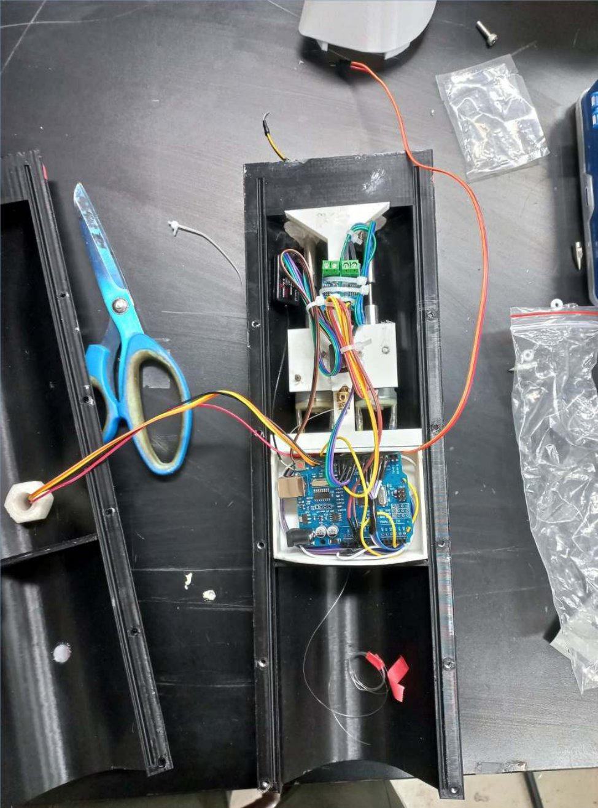
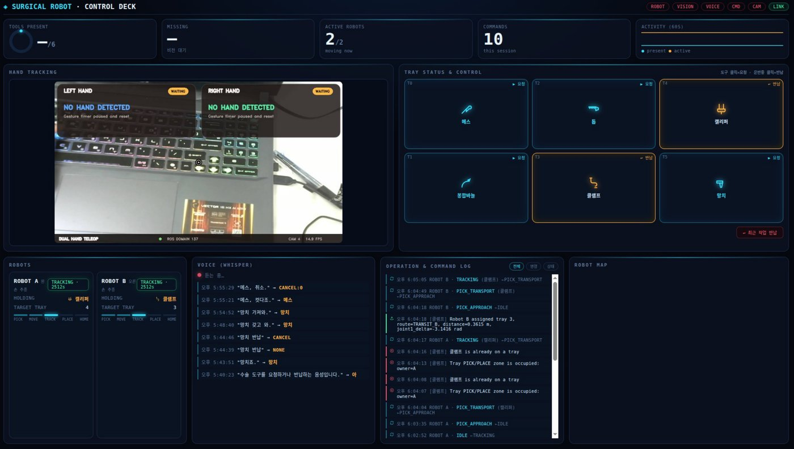
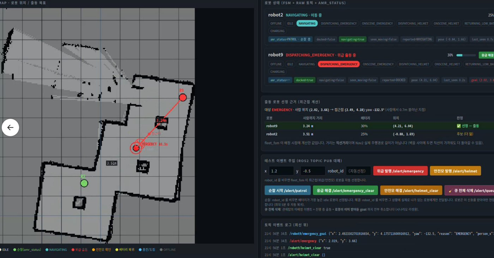
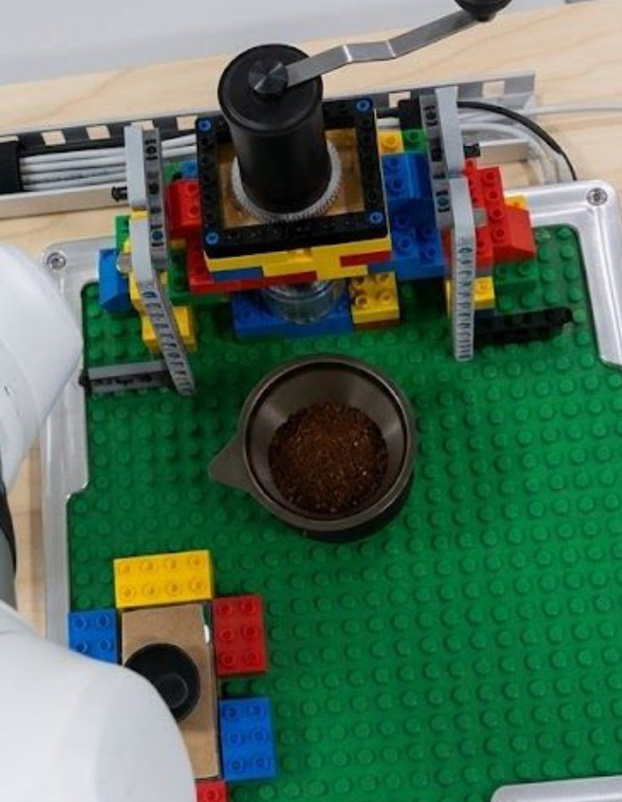

Doosan M0609 · RG2 · RealSense · RTX 4060 Laptop 8GB · 5인 팀 · 26.07.30~26.08.12
"사과 바구니에 담아줘" 같은 자연어 지시를 대규모 언어 모델이 해석하고, 협동로봇이 물체를 인식해 장애물을 피해 집어 옮기는 것을 목표로 한 시스템입니다. 저는 GPU 한 대의 메모리에 맞춰 사용량을 조정하고 판단·실행 계층을 연결했으며, 실물 그리퍼의 치수를 직접 재서 파지 모델과 맞췄습니다. OMPL(경로계획 라이브러리) 경로에서는 이동 중 사람이 손을 넣으면 멈추고 새 경로로 다시 계획하는 동작을 확인했습니다.
본인 담당 판단 계층(VLA)·안전 계층(FSM) 통합, GraspGenX↔실물 RG2 정합(실측·보정·규약), GPU 메모리 대응(파지 후보 수 조정·YOLO 노드 누적 정리), 구동 중 정지 후 재계획 연결, 인지 실패 감지 게이트(팀 모션 코드 위에 제안·구현)
문제와 해결 과정 보기 →
ERP42 4륜 전기차 · 팀 MTP(충남대) · 팀장 · 24.08~25.11
2025 대학생 창작모빌리티 경진대회(한국자동차안전학회 주관) 무인모빌리티 부문에 3인 팀의 팀장으로 출전했습니다. 개발 일정을 세워 공유하고 실습 환경과 인수인계 자료를 맡았으며, 경로추종을 구현하고 명령 중재 판단 노드 프로토타입을 만들었습니다. 팀 회고 기준으로, 인지 모듈 일부가 빠진 상황에서도 측위와 경로추종이 유지되어 대회를 완주했습니다.
본인 담당 팀장(개발 일정 수립·공유, 실습 환경 구성, 인수인계 문서화) · waypoint 경로추종 · 명령 중재 판단 노드
문제와 해결 과정 보기 →

열감지 추적 구명튜브 전달장치 및 발사장치
학사 졸업프로젝트 · Arduino Uno · 3인 팀 · 24.08~25.08
익수자에게 스스로 다가가 구명튜브를 전달하는 휴대형 전달장치입니다. 저는 아두이노 회로와 좌우 모터 차동 제어를 맡았고, 팀원들과 함께 열화상 센서·RC 입력·모터 코드를 통합해 열원 방향에 따라 모터 속도를 4단계로 달리하는 자율 추적과 수동 조작을 구현했습니다. 상용 구조 장비가 500만~700만 원대인 데 비해 팀은 제작비 약 51만 원으로 완성했고, 교내 산학연 캡스톤디자인 아이디어 최우수상과 졸업작품 경진대회 장려상을 받았습니다.
본인 담당 좌우 DC 모터 차동 제어 · 아두이노 회로 구성 · 설계보고서 문서화
프로젝트 기록

VLA 기반 수술도구 집도의 전달 시뮬레이션 (Isaac Sim)
Dual Doosan M0609 · Isaac Sim · 팀 프로젝트 · 26.06.17~26.06.30
집도의의 손 동작과 음성 명령에 따라 두 대의 협동로봇이 수술도구를 전달하는 시뮬레이션(Isaac Sim)입니다. 저는 작업 단계, 트레이별 도구 재고, 손 추적 영상과 명령 로그를 한 화면에서 보는 웹 대시보드를 만들었습니다. 상태가 바뀔 때만 화면을 다시 그리도록 해 화면 떨림도 막았습니다.
본인 담당 웹 대시보드 UI·상호작용
▶ 1분 시연 영상 · 코드

제조업 공장 산업안전 AMR 순찰로봇 및 관제 시스템
AMR 2대 · 천장 웹캠 2대 · 3인 팀 · 26.07.01~26.07.14
산업 현장을 모사한 환경에서 천장 카메라가 작업자의 쓰러짐이나 안전모 미착용을 감지하면 가장 가까운 AMR을 출동시키는 안전 관제 시스템입니다. 쓰러지는 순간 응급 상태가 1초에 5번 바뀌던 문제를, 해제 방향에만 지연을 두어 응급 반응 속도는 유지한 채 안정화했습니다.
본인 담당 관제 FSM(우선순위 선점)·쓰러짐 판정 규칙·메시지 전달 정책 설계와 디버깅
▶ 1분 시연 영상 · 코드

협동로봇 핸드드립 커피 자동화
Doosan M0609 + OnRobot RG2 · 5인 팀 · 26.07.15~26.07.29
카메라 없이 협동로봇의 힘 센서와 그리퍼 접점 신호만으로 원두 계량부터 나선형 드립까지 5단계 핸드드립 공정을 자동화했습니다. 그리퍼 신호가 1초 넘게 끊기면 정지를 요청하도록 했습니다. 병행 개발본에서는 잡았는지 판정할 수 없는 순간을 따로 분리해, 물체를 문 채 다시 집기를 시도하지 않도록 했습니다.
본인 담당 그리퍼 예외 상황 처리 및 정상 공정 복귀 알고리즘(팀 README 역할표 기준)
▶ 1분 시연 영상 · 코드
조용한 실패를 쪼개 잡습니다
에러 없이 조용히 잘못 동작하는 문제를 만나면 실험 조건과 실패 원인을 기록하며 원인 후보를 나눠 하나씩 재현하고, 해결 방향을 단계적으로 좁혀 갑니다. VLA의 장애물 인식 누락 감지, AMR의 응급 신호 흔들림, 병행 개발본의 커피 파지 판정 불가 분리가 그렇게 찾은 문제입니다.
판단과 안전을 분리해 통합합니다
상위 판단 모듈의 명령을 구동부로 바로 보내지 않고 제어 권한을 한 곳에 모아 설계합니다. VLA에서는 판단 계층과 실행 계층의 제어 권한을 분리했고, ERP42 명령 중재 프로토타입에서는 유효한 입력이 없으면 제동하도록 했습니다.
실기로 확인하고 기록합니다
모델의 값보다 실물에서 잰 값을 기준으로 삼고 그 결과를 다음 사람이 이어받을 수 있게 남깁니다. VLA 프로젝트의 실물 그리퍼 실측 정합과 ERP42 인수인계 문서화가 그 사례입니다.